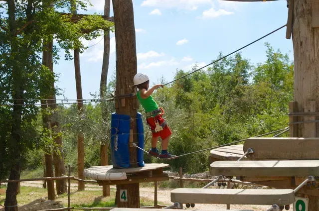
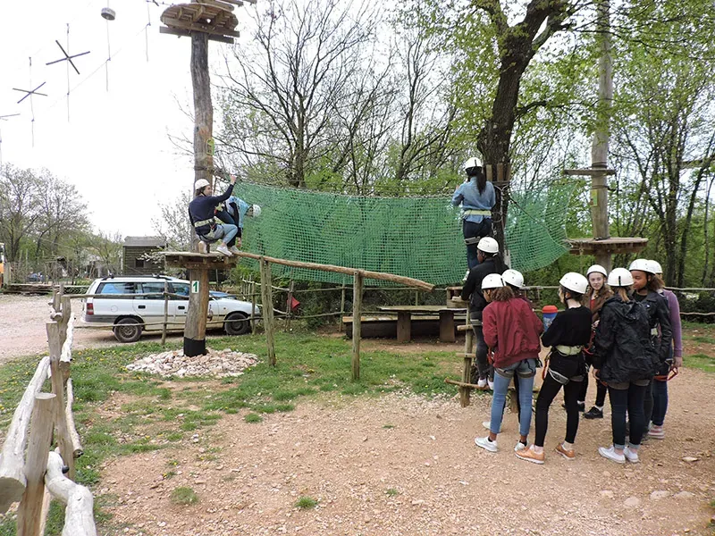
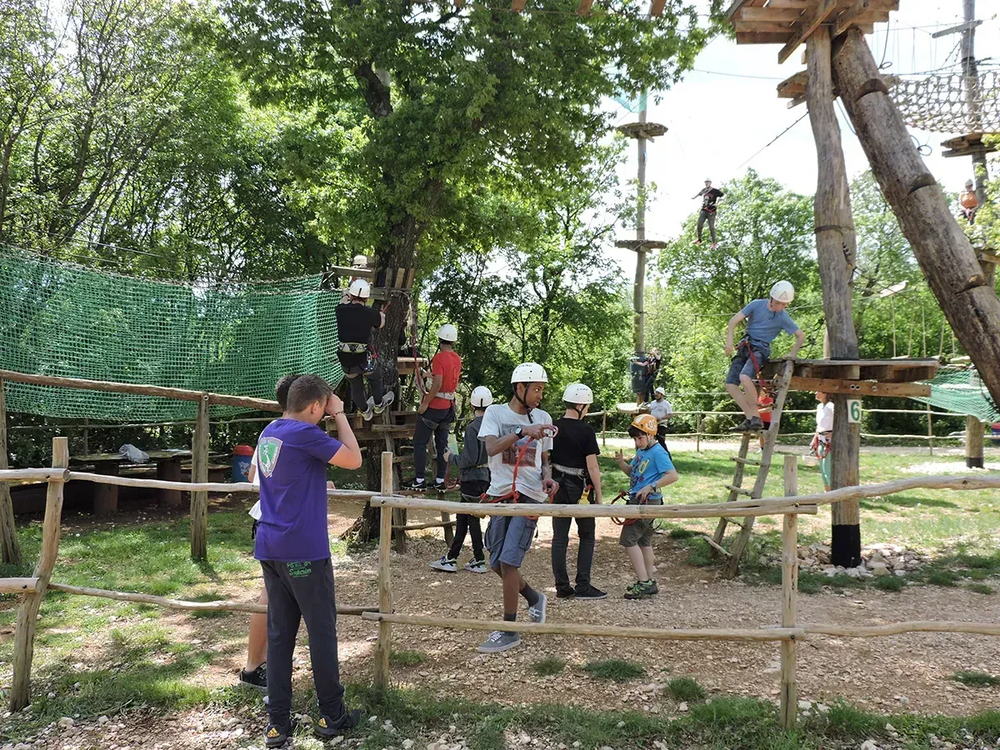
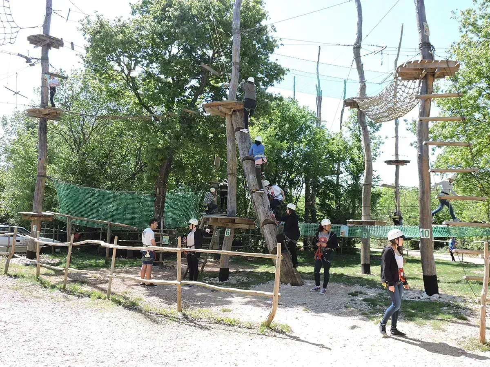
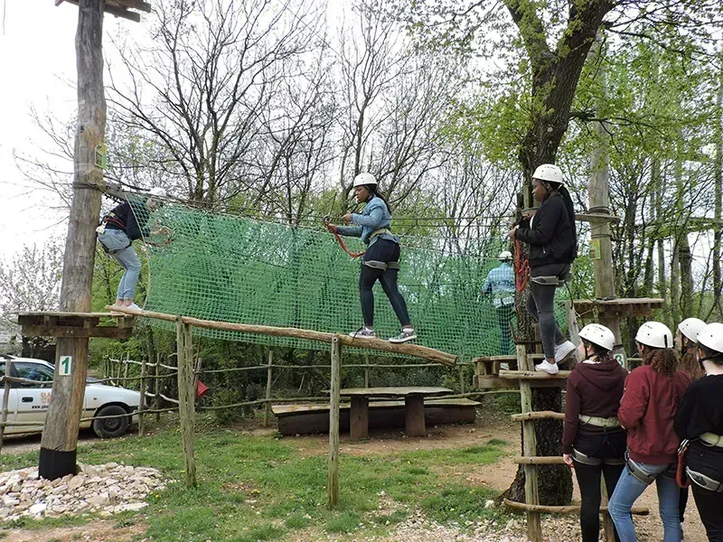
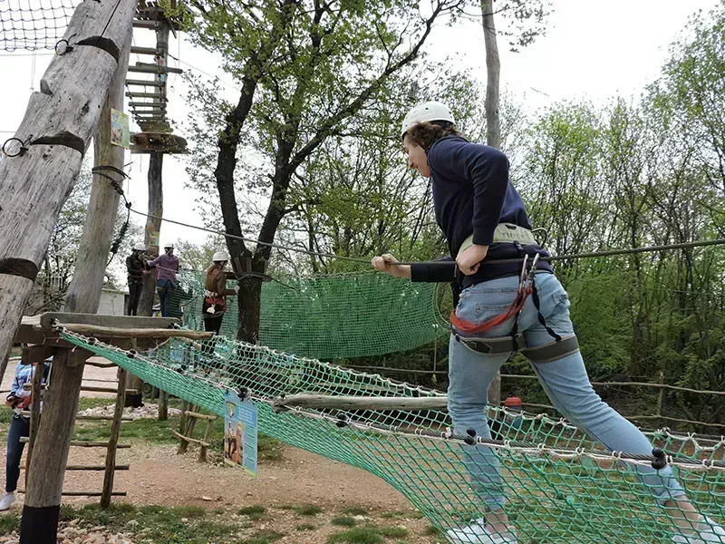

Training Route (Yellow Route)
Glavani Park's yellow training route is a certified high-ropes course at 2 metres above the forest floor — the perfect introduction for younger children, first-time climbers, and families who want to build confidence before the blue and black routes.
You stay on continuous belay from start to finish while instructors explain harness fit, safety signals, and how to tackle balance obstacles and rope bridges. The training route is included in the Training route + 2 games package — all park games except the Human Catapult, €20 for children and €30 for adults.
Training Route video
Family-friendly introduction to high ropes — the 2-metre yellow route
The yellow training route is where most families start at Glavani Park. At just 2 metres high, children tackle real high-ropes obstacles — rope bridges, balance beams, and cargo nets — while parents walk alongside on the forest path. Continuous belay keeps everyone connected from start to finish.
Who can take part
The route is designed for younger children and first-timers with an adult nearby. Instructors explain harness fit, safety signals, and how to tackle each obstacle. Ideal for a first visit to an adventure park in Istria.
Visitor photos & videos — Training Route (Yellow Route)






What to do next in the park
Many visitors progress to the Treetop Course and Devil's Causeway Course the same day. The Training route + 2 games package covers all park games except the Human Catapult — €20 for children, €30 for adults. See prices.
Planning your visit
Glavani Park is at Glavani 10, Barban — about 30 minutes from Pula, 45 minutes from Rovinj and Rabac, and 50 minutes from Poreč. Free parking is on site. The park is open daily 9 AM–5 PM with last entry at 3 PM, so allow three to four hours for the whole park.
For Training Route (Yellow Route) and our other attractions you can book online for groups up to 10 or call ahead for larger parties. See packages and prices — whole park incl. catapult €60–70 (children/adults), whole park without catapult €40–50, training route + 2 games €20–30, family packages from €150.
Safety and equipment
Every activity at Glavani Park is instructor-led. Equipment is CE-certified and checked daily. You receive a harness, helmet, and clear briefing before you start. Read more on our safety page.
Packages from €20 children / €30 adults · book online for up to 10